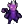

| - | Character | Speed | - | - | Score | - |
|---|---|---|---|---|---|---|
| Aria | - | - | 1987 | 2350th | ||
| Bard | 5:16.71 | 195th | 14639 | 288th | ||
| Bolt | 17:09.46 | 966th | 1478 | 1634th | ||
| Cadence | 7:54.93 | 232nd | 8515 | 1688th | ||
| Diamond | 9:01.13 | 238th | - | - | ||
| Dorian | 10:20.55 | 316th | 1205 | 2510th | ||
| Dove | 6:12.62 | 312th | 353 | 2773rd | ||
| Eli | 22:54.71 | 640th | 1397 | 4915th | ||
| Mary | - | - | 1016 | 3189th | ||
| Melody | 9:24.75 | 340th | - | - | ||
| Monk | - | - | 1803 | 3546th | ||
| Nocturna | 12:27.68 | 435th | 12448 | 722nd | ||
| Tempo | 7:20.48 | 231st | 3052 | 2317th | ||
|  | Coda | - | - | 185 | 287th | |
| Story | - | - | - | - | ||
| 9char | - | - | 14718 | 301st | ||
| 13char | - | - | - | - |
| Speed | Aria | Bard | Bolt | Cad | Dia | Dor | Dove | Eli | Mary | Mel | Monk | Noc | Tempo | Coda |
|---|---|---|---|---|---|---|---|---|---|---|---|---|---|---|
| Hard | - | - | - | - | - | - | - | - | - | - | - | 24:23.53393rd | - | - |
| NR | - | - | - | - | - | - | - | - | - | - | - | - | - | - |
| Rando | - | - | - | - | - | - | - | - | - | - | - | 19:29.5686th | - | - |
| Phasing | - | 11:16.52145th | - | - | - | - | - | - | - | - | - | - | - | - |
| Mystery | - | 22:29.07366th | - | - | - | - | - | - | - | - | - | - | - | - |
| Score | ||||||||||||||
| Hard | - | - | - | - | - | - | - | - | - | - | - | 22114528th | - | 655th |
| NR | - | - | - | 26341648th | - | - | - | - | - | - | - | - | - | - |
| Rando | - | 8972747th | - | - | - | - | - | - | 60782nd | - | - | 36801757th | 311159th | - |
| Phasing | - | 10962123rd | - | - | 622412th | - | - | - | - | - | - | 1242312th | - | - |
| Mystery | - | 2995859th | - | - | - | - | - | - | 54531st | - | - | 4411334th | - | - |
| Deathless | 0-5-1435th | 0-4-3731st | - | 4-5-5824th | - | 0-1-283rd | - | - | - | 3-1-367th | - | - | - | - |
Last Updated:2022/05/30 06:50